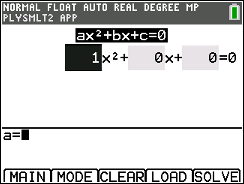

This guide is for the TI-84 Plus CE, and also applies to the TI-84 Plus CE-T. Maybe TI-83 Premium CE too. Might work on Plus C silver edition, haven't tested. eZ80/Z80 compatibility is complicated. Blame IXYS.
This guide is by no means exhaustive, although I'd like to think that it's pretty thorough.
My configuration should prevent you from losing your programs in the event of a memory wipe, and should also be able to hide programs from the PRGM menu. This should enable you to use the programs on the ACT, SAT, and AP exams. Do not use this to copy down questions and answers. You will be in unbelievable trouble. I am not responsible if you do something dumb and get caught.
Go through this guide completing everything up to the table of contents, at which point you can choose the functionality you need. You can email me if you have any questions at rishabh(at)null.net.
Test Mode is a feature used by some teachers and testing organizations to disable apps and programs. It is characterized by a blue bar at the top. Your programs may not work in this case. Test mode requirements are rare and when I took the SAT, ACT, and a math AP, they did not require it. Nevertheless, I am working on a bypass. Multiple people have already done it, particularly on the nSpire (PTTKiller, PTTCopier), but the big forums censor it religiously for some reason. I do have some leads though. For now, if you're interested in a bypass, don't upgrade past OS 5.3.0 and install the apps you need directly from here.
In the unlikely event that you crash out of your calculator to a black screen and it won't turn on, simply use a pencil to depress the reset button on the back of your calculator, right above the battery door. You should be ready to go!
Install the latest TI OS and Apps. This in itself a big improvement if you haven't updated your calculator since you bought it. Download the top item here. Drag the TI84CEBundle-xxx files to the calculator icon shown below in TI Connect. Make sure your calculator is on and connected. Hit send to transfer and do not disconnect your calculator until you get to the flashing cursor on its display or TI splash screen.

Reset the calculator memory. Hit this sequence of keys in order, one after each menu pops up.
That's it!
Many of the libraries and codes we need come from here. Big props to these guys.
The Cesium shell is an important piece of software which provides lots of the functionality I outlined. It is developed and maintained by Matt Waltz. (@MateoConLechuga) It can be built from https://github.com/mateoconlechuga/cesium.git or simply downloaded as a zip from here.
In order to install Cesium, drag Cesium.8xp to your calculator as you did above. Once transferred, run it. Now, you can safely delete the installer if it's still there (check the PRGM menu). Delete it using the Memory Management menu ([2nd], [+], [2], [7]) and use the the DEL key.
Now, use the APPS menu to open Cesium. It's #4 for me.

This will bring you to the main screen.

From here, you can use the arrow keys to navigate up and down the menu. Run a program with [enter]. Edit settings with [alpha]. Lock a file to prevent editing. Hiding a file prevents it from showing in the memory management or PRGM menus. It will then only be accessible from the Cesium shell. Archiving a folder will prevent it from being erased during a RAM reset, which is the preferred method of resetting calculators in my experience. Definitely will survive whatever they do to your calc for the SAT. It did for me. Additonally, in newer versions of the TI OS, you can run programs without unarchiving, which is nice.
You can use the shortcut to quickly open Cesium. The default shortcut is [on]+[PRGM]. Hold them simultaneously as you would the shift key on a keyboard. After a memory reset you must launch Cesium from the apps menu for the shortcut to work.
Functionality
The numeric solver is a useful functionality built into new calculator OS versions. To use it, make sure you are in mathprint mode (hit mode and it's the first option.) Then, hit the [MATH] key and the up arrow. The default location for it is C, which scrolling one up from the top should bring you to.
To use it, enter the left side of the equation in the top box, hit [enter], and enter the right side in the bottom box. Then hit enter and then graph to solve. It can handle multiple variables when the equation permits. For equations with multiple solution, adjust the bounds (min/max, default is -1e99 to 1e99 so ℝ) or enter a guess value next to the variable letter. For example, if you want to check for a negative value, enter a low negative value. The calculator checks outward in both directions from the guess value for the nearest real solution.

Your calculator can also automatically find the real and imaginary roots of polynomials. You don't even need to know the quadratic formula. Use it by opening the apps menu and choosing 'PlySmlt2.' It's #9 for me. Then, select the first item (you can just hit 1.) This will bring you to this menu
From here, select the order (degree) of the polynomial. Then you can choose whether to look for only real solutions, or also imaginary solutions in your preferred format. There's also a radian/degree option. Hit graph when done.
Here, hit enter to edit each value, hit enter, and arrow over to edit the next. You can edit the signs too. Your polynomial must be in general form as seen below.
Once completely entered, hit [graph] to solve. You should see the roots. Hit graph again to convert fractions to decimals or vice versa where applicable. To exit from here, hit [y=] and hit [6].
The same PLYSMLT2 app can also solve simultaneous equations. In the app, choose option 2 - Simultaneous Eqn Solver. You can now select the number of equations and variables/unknowns.
Hit [graph] when done and enter your equations the same way as you did with your polynomial earlier. Hit graph again to solve.
Your calculator can also give you information on conic geometry figures. To do this, open the "Conics" app, #5 for me. Choose your shape and equation type. Enter the equation in the form you selected and then hit [alpha] and then [enter]. this will give you the relevant information.
For this section, you'll need to install a program. You can download it here. I have rehosted it because I cannot locate the original author. Remember to archive and hide it in the Cesium shell. Run it, choose the calculation and shape you want to use, and fill in the value from the respective formula. Supports area, volume, and surface area for many, many shapes.
For this section, we will be needing another program, this time UNITCIRC by Sam Gill ("DragonRise"). You can download it here.
Start the program and use the up and down arrow keys to navigate along the circle. The x shows you which part of the circle is selected. The middle section shows the sign guide. The top left number is the x-coordinate and the top right number is the y-coordinate. These can be a little difficult to see at times, so look carefully. The bottom right value is the angle in radians, and the bottom left is the same in degrees.
Andres Sevilla's Right Triangle Solver (RGHTSLVR) can solve any right triangle with whatever information you have. Enter 0 if you don't know the value. The program will draw a nice triangle depicting all the values. Download it here.
Factorization of polynomials is also possible on your calculator. You will need a new program, APOLYFC9, by Anders Tiberg and Joe Erdeky. Download it here.
This program is very simple. Enter the polynomial at the POLYNOMIAL prompt. If you get anything other than that prompt on running the program, hit clear and it should come up.
For multiplication we are going to need another program. This one is DEFACTOR/POLYMULT by Anders Tiberg. You can download it here. Use either one. Note that DEFACTOR provides it as a list of coefficients. If POLYMULT doesn't work as expected, use that.
For division, we're going to use another one of Anders Tiberg's programs, POLYDIV. Download it here. Install POLYDIV.8xp. You should use the program according to Tiberg's instructions.
This program divides polynomials. Enter them like: (X^3+X^2+X-3)(X^2+2X+3). You can also enter several polynomials: (117X^4-20X^3-390X^2+20X+273)(X^2-1)(9X+13)(13X-21). The first polynomial will then be divided by the second, and the quotient will be divided by the third, and so on. There are no other limits to the number of polynomials you can enter than memory, and of course the degree of the first polynomial. You will get the coefficients of the quotient and the remainder for each step. You can use any one variable A to theta. The terms can be entered in any order, and there can be more than one of the same degree.
Put simply, enter the polynomials each enclosed in their own set of parentheses. It will then give you the quotient and remainder for each step.
You can also use programs for calculus. CALCULCE by Osias Hernandez will serve this purpose. He claims this program saved him hours on homework, and I can see how this can be true. It supports finding the arc length, Average Rate, Average Value, Riemann Sum, tangent line, the volume of revolution, and more. Download it here. Pressing 7 in the menu will take you to the next page. It should guide you through providing the necessary information. Make sure to clear out the input field before entering your value.